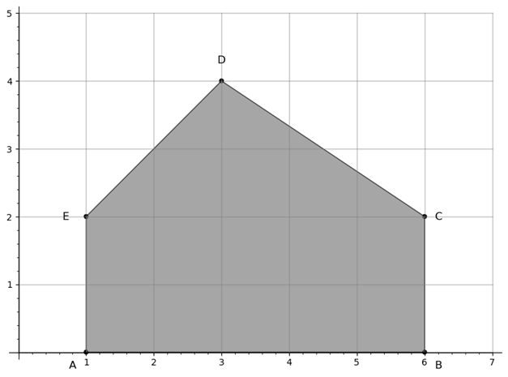
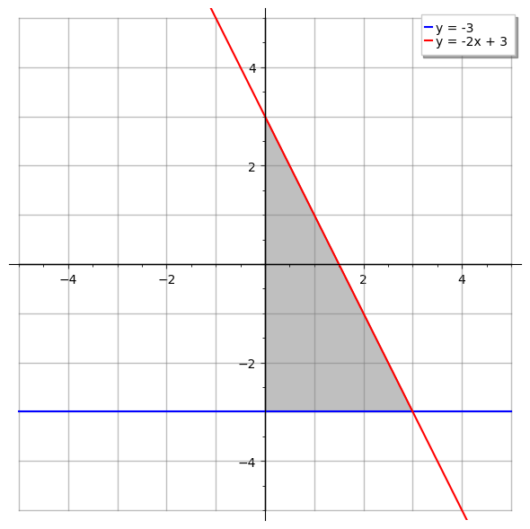
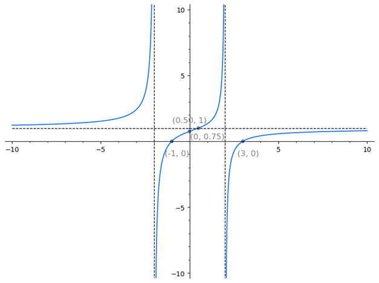
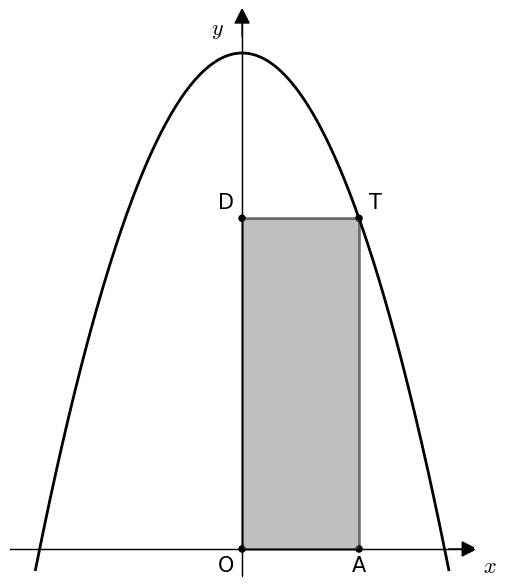

Spomladanski izpitni rok, sobota, 3. junij 2023, pola 1
Dani sta množici $ A = {1, 2, 3} $ in $ B = {3, 4, 6} $. Z naštevanjem elementov zapišite množici:
(2 točki)
Unija: Zapišemo vse elemente obe množic. Če se kakšen element nahaja v obeh množicah, le-tega zapišemo le enkrat. $$\boxed{A \cup B = {1, 2, 3, 4, 6}}$$
Presek: Zapišemo samo tiste elemente, ki se pojavijo v obeh množicah hkrati. $$\boxed{A \cap B = {3}}$$
Izračunajte $ \frac{1}{2 + i} $ in rezultat zapišite v obliki $ a + bi $, kjer sta $ a, b \in \mathbb{R} $.
(3 točke)
Naš cilj je zapisati imenovalec kot realno število. Za kompleksna števila velja: Produkt števila in njegove konjugirane vrednosti je nenegativno realno število. Spomnimo se, kako izgleda konjugirano kompleksno število: $\overline{z} = \overline{a+bi}=a−bi.$ Spomnimo se tudi naslednje lastnosti števila $i$: $i^2=-1$.
S pomočjo teh podatkov se lahko lotimo računanja:
$$\frac{1 \cdot (2 - i)}{(2 + \mathrm{i})(2 - \mathrm{i})} = \frac{2 - i}{4 - \mathrm{i}^2} = \frac{2 - i}{4 + 1} = \frac{2 - i}{5} = \boxed{\frac{2}{5} - \frac{1}{5} i}$$
Preoblikujte besedilo v matematični (algebrski) zapis:
Od kvadrata vsote števil $ a $ in $ b $ odštejemo petkratnik kvadrata števila $ c $.
(2 točki)
Premislimo le, kaj je razlika med kvadratom vsote in vsote kvadratov: $(a+b)^2 \neq a^2 + b^2 $.
Rešitev:
$$\boxed{(a+b)^2 -5\cdot c^2}$$
Poenostavite ulomek:
$$ \frac{3^{x+1}-2\cdot 3^x-3^{x-1}}{4\cdot 3^{x - 1}} $$
(3 točke)
Želimo se znebiti potence $3^x$ oz. neke variacije. To lahko storimo z izpostavljanjem tako, da v števcu lahko izpostavimo največji skupni faktor $3^{x-1}$. Račun je sledeč:
$$\frac{3^{x-1}\cdot (3^2 - 2\cdot 3 - 1)}{4\cdot 3^{x - 1}}= \frac{9-6-1}{4}= \frac{2}{4} = \boxed{\frac{1}{2}}$$
Izračunajte ploščino lika $ ABCDE $ na sliki.

(3 točke)
Lik si razdelimo na dva lika:
Ploščino pravokotnika izračunamo po formuli $S = a\cdot b$. Iz slike razberemo: $a = 5$ in $b = 2$.
Ploščino trikotnika izračunamo po formuli $S = \frac{a\cdot v_a}{2}$. Iz slike razberemo: $a = 5$ in $v_a = 2$.
Ploščina celotnega lika je enaka vsoti ploščin pravokotnika $ABCE$ in trikotnika $ECD$:
$$S = 5 \cdot 2 + \frac{5 \cdot 2}{2}= 10 + \frac{10}{2} = 10 + 5 = \boxed{15}$$
Izračunajte vrednost izraza:
$$ 8 \cdot (\log_{2}{32} + 2^{-3}) $$
(3 točke)
Pri tej nalogi bomo uporabili naslednje pravilo za računanje z logaritmi: $\log_{a}{a^b} = b \cdot \log_{a}{a} = b $, saj je $\log_{a}{a} = 1$.
Rešitev: $$8\cdot (\log_{2}{2^5} + 2^{-3}) = 8 \cdot (5 + \frac{1}{8}) = 8 \cdot \frac{(40 + 1)}{8} = \boxed{41}$$
Izračunajte $ \int_0^1 f(x) , dx $, če je znano:
$$ \int_0^5 f(x) , dx = 6 \quad \text{in} \quad \int_1^5 f(x) , dx = 4. $$
(1 točka)
Vemo, da je določeni integral aditiven. To pomeni, da za funkcijo $f$ in realna števila $a, b$ in $c$, kjer $a < b < c$, velja: $$\int_a^c f(x) , dx = \int_a^b f(x) , dx + \int_b^c f(x) , dx$$ Pomagali si bomo tudi z naslednjim pravilom: $$\int_a^c f(x) , dx = - \int_c^a f(x) , dx$$
Sedaj rešimo nalogo sledeče: $$ \int_0^1 f(x) , dx = \int_0^5 f(x) , dx - \int_1^5 f(x) , dx = 6 - 4 = \boxed{2}. $$
Rešite kvadratno enačbo $ x^2 + 2x + 2 = 0 $ v množici kompleksnih števil.
(3 točke)
Nalogo bomo rešili s pomočjo formul za reševanje kvadratnih enačb v obliki $ax^2 + bx +c = 0$:
$ x_{1,2} = \frac{-b \pm \sqrt{D}}{2a} \text{, kjer je} \ D = b^2 - 4ac$
Najprej izračunajmo diskriminanto: $D = 2^2 - 4\cdot 1 \cdot 2 = 4 - 8 = -4$
Ker je diskriminanta negativna, bodo ničle kompleksne. Zapišimo: $ D =-4 = i^2 \cdot 2^2 \implies \sqrt{D} = \sqrt{2^2 \cdot i^2} = 2i$
Vstavimo sedaj naše podatke v formulo za ničle: $ x_{1,2} = \frac{-2 \pm 2i}{2} = -1 \pm i \implies \boxed{x_1 = -1 + i} \ \text{in} \ \boxed{x_2 = -1 - i}$
Narišite premici z enačbama:
Izračunajte ploščino trikotnika, ki ga premici oklepata z ordinatno osjo.
(6 točk)
$$ -3 = -2x +3 $$
$$ -6 = -2x $$
$$ x = 3 $$
$$ y = -2\cdot 3 + 3 = -3 $$
$$ |AB| = \sqrt{(0-0)^2 + (3 - (-3))^2} = \sqrt{6^2} = 6 $$ $$ |AP| = \sqrt{(3 - 0)^2 + (-3 - (-3))^2} = \sqrt{3^2} = 3 $$

Izračunajte osnovo $ a $ logaritemske funkcije $ f(x) = \log_a{x} $, katere graf poteka skozi točko $ A(\frac{1}{8}, -\frac{3}{2}) $.
(6 točk)
Pri reševanju naloge si bomo pomagali s povezavo: $y = \log_a{x} \iff x = a^y $. V enačbo vstavimo $x = \frac{1}{8}$ in $y = -\frac{3}{2}$: $$ -\frac{3}{2} = \log_a{\frac{1}{8}} $$
$$ a^{-\frac{3}{2}} = \frac{1}{8} $$
$$ a^{-\frac{3}{2}} = 2^{-3} $$
$$ a^{-\frac{3}{2}} = 4^{-\frac{3}{2}} $$
$$ \boxed{a =4} $$
Izračunajte ničle, pole, začetno vrednost in asimptoto funkcije $f(x) = \frac{x^2 - 2x - 3}{x^2 - 4}$ , ter narišite njen graf.
(8 točk)
$x^2 - 2x - 3 = 0 $
$(x-3)(x+1) = 0 $
$\implies \boxed{x_1 = 3, x_2= -1}$
$ (x-2)(x+2)=0 $
$ \implies \boxed{x_1= 2, x_2=-2} $
$f(0) = \frac{-3}{-4}=\boxed{\frac{3}{4}}$
$\boxed{y = \frac{1}{1}= 1}$
$ (x^2 - 2x - 3):(x^2 -4)=1 \text{, ostanek je} -2x+1 $
$ \implies -2x+1 = 0 \iff x= \frac{1}{2} $
Torej graf seka asimptoto v točki $\boxed{(\frac{1}{2} ,1)}$.

Naj bo $ \cos{x} = \frac{1}{3} $ in $ \frac{3\pi}{2} < x < 2\pi $.
Izračunajte natančni vrednosti izrazov:
(6 točk)
Ker so vrednosti $x$ med $ \frac{3\pi}{2} $ in $2\pi $, se nahajamo v 4. kvadrantu. Torej ima $\cos{x}$ pozitiven predznak in $\sin{x}$ negativen predznak. Računanje $\sin{x}$ si pomagamo s formulo $\sin^2{x}+\cos^2{x} = 1$: $$ \sin^2{x} = 1 - \left( \frac{1}{3} \right) ^2 \implies \sin{x} = -\sqrt{1-\frac{1}{9}} = -\sqrt{\frac{8}{9}} = \boxed{-\frac{2\sqrt{2}}{3}} $$
Pri drugi enačbi si pomagamo s fomulo $\cos{(\alpha + \beta)}=\cos{(\alpha)}\cos{(\beta)} - \sin{(\alpha)}\sin{(\beta)}$.
$$ \cos\left(x + \frac{\pi}{4}\right) = \cos{(x)} \cdot \cos\left(\frac{\pi}{4}\right)- \sin{(x)} \cdot \sin\left(\frac{\pi}{4}\right)= $$
$$ = \frac{\sqrt{2}}{2} \cos{(x)} - \frac{\sqrt{2}}{2} \sin{(x)} = $$
$$ = \frac{\sqrt{2}}{2} \cdot \frac{1}{3} - \frac{\sqrt{2}}{2} \cdot \left(-\frac{2\sqrt{2}}{3}\right)= $$
$$ = \frac{\sqrt{2}}{6} + \frac{2 \cdot 2}{6} = \boxed{\frac{4 + \sqrt{2}}{6}} $$
Preverite, da je število $ x = -1 $ dvojna ničla polinoma:
$$ p(x) = 2x^4 + 7x^3 + 6x^2 - 2x - 1. $$
Poiščite še preostali dve ničli.
(7 točk)
Nalogo bomo reševali s Hornerjevim algoritmom.
| $2$ | $7$ | $6$ | $-1$ | $-2$ | |
|---|---|---|---|---|---|
| $-1$ | $-2$ | $-5$ | $-1$ | $2$ | |
| $2$ | $5$ | $1$ | $-2$ | $0$ |
| $2$ | $5$ | $1$ | $-2$ | |
|---|---|---|---|---|
| $-1$ | $-2$ | $-3$ | $2$ | |
| $2$ | $3$ | $-2$ | $0$ |
Dobili smo dvojno ničlo $x_{1,2} = -1$. Naprej lahko rešujemo kot kvadratno enačbo $2x^2+3x-2=0$: $$ D = 9+4\cdot 2\cdot 2= 25 \implies \sqrt{25} = 5 $$
$$ x_{3,4} = \frac{-3 \pm 5}{2 \cdot 2} \implies x_3 = \frac{-3+5}{4}=\frac{2}{4}=\boxed{\frac{1}{2}} \quad\text{in} \quad x_4 = \frac{-3-5}{4}=\frac{-8}{4}= \boxed{-2} $$
Točka $ T $ leži v prvem kvadrantu na grafu funkcije $ f(x) = 6 - x^2 $ tako, da je ploščina pravokotnika $ OATD $ maksimalna (glejte sliko).
Izračunajte ploščino pravokotnika $ OATD $.

(7 točk)
$$ P =x \cdot y = x \cdot f(x) = x \cdot (6-x^2) = 6x -x^3 $$
$$ P'(x) = \frac{d}{dx} \big(6x - x^3\big) = 6 - 3x^2. $$
$$ 6 - 3x^2 = 0 $$
$$ 3x^2 = 6 $$
$$ x^2 = 2 \implies x = \pm \sqrt{2}. $$